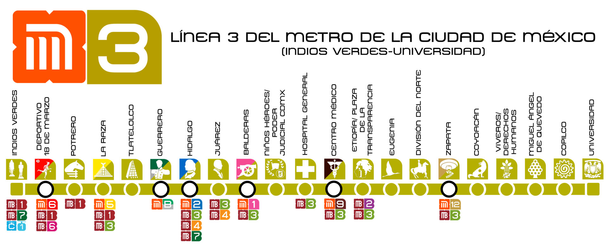
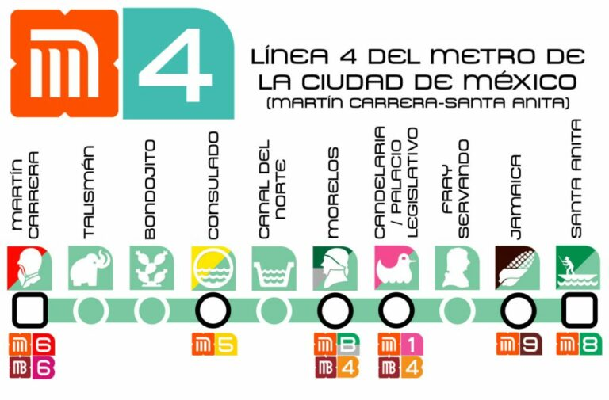
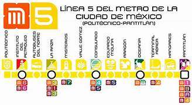
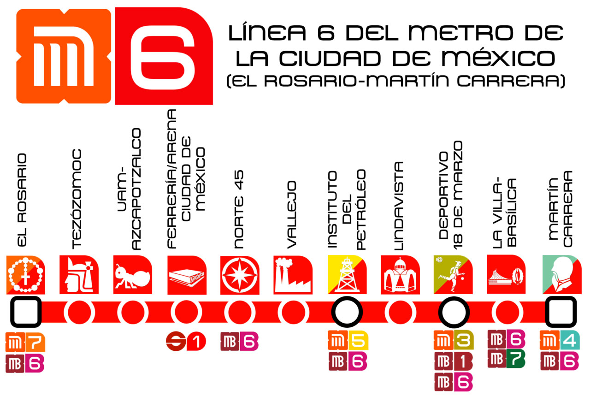
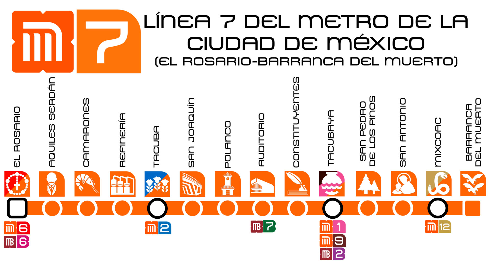
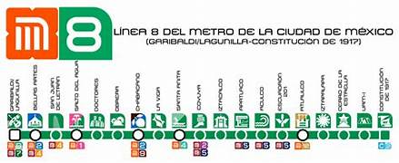
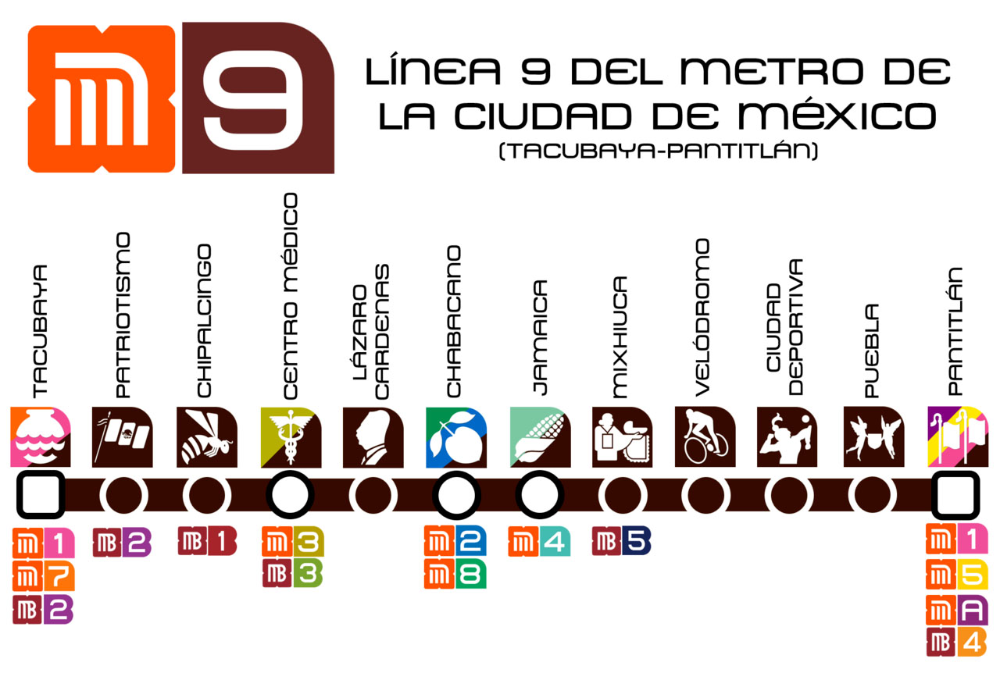
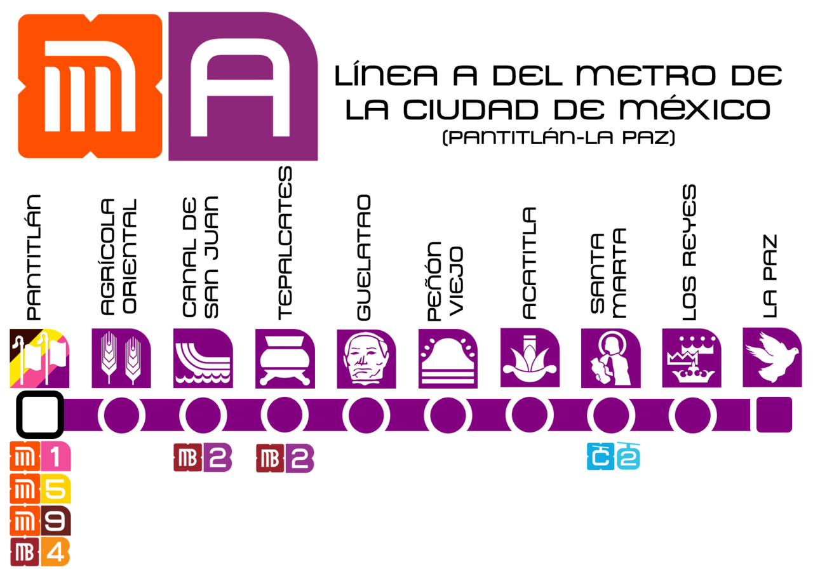
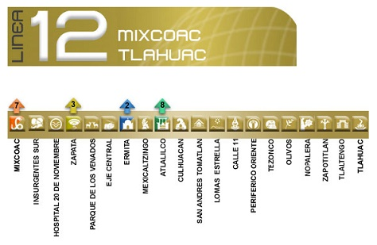

| Actualmente, el metro de la CDMX cuenta con un total de 12 lineas, las cuales estan repartidas por la CDMX y las cuales son: |
LINEA 1 |
LINEA 2 |
|
La linea 1 o tambien la linea rosa, es la mas antigua de todas, ya que su contrucción empezo en el año de 1967 y finalizo la primera etapa en 1969, de Zaragosa a Chapultepec. La última ampliacion que tuvo la linea 1, fue en el año de 1984, donde se inaguro la que actualmente es la estación con más transbordos, Pantitlán. Teniendo como terminales Pantitlán-Observatorio Cuenta con con un total de 20 estaciones, las cuales, 7 de ellas son correspondecia con otras lineas y 18 km de vias. Teniendo como referencia el periodo enero-marzo 2023, la linea rosa es usada por 14,921,911 usuarios, siendo Observatorio la estación con mayor afluencia de usuarios. Actualmente, la linea 1 esta siendo remodelada en su totalidad, teniendo el primer tramo acabado, el cual era de Pantitlan a Isabel la Católica. El segundo tramo esta siendo remodelado y va de Salto del Agua a Observatorio |
La linea 2 tambien reconocida como la linea azul, es la linea mas usada de toda la red del metro, con una afluencia de 47,663,044 usuarios. Va de Cuatro Caminos-Tasqueña, con una longitud de 20 km y un total de 24 estaciones, siendo 6 de correspondencia. Fue la segunda linea en construirse, en el año de 1970, de Tasqueña-Pino Suárez y siendo Pino Suaréz la primera correspondecia de toda la historia del metro. El 20 de octubre de 1975, ocurrio el primer gran incidente fatal en la historia del metro, ya que en la estación viaducto, el tren número 10 que transportaba a 130 pasajeros, se estrelló con el número ocho a una velocidad de 70 kilómetros por hora, el cual se encontraba estacionado en las vías de la estación Viaducto. El accidente le quitó la vida a 31 personas, así como heridas de gravedad a otras 70 personas, de acuerdo con las cifras oficiales. El accidente ocurrió poco después de las 9:40 de la mañana en el andén con dirección a Tasqueña. |

Presione la imagen para mas informacion |

Presion la imagen para mas informacion |
LINEA 3 |
LINEA 4 |
|
La famosa linea verde o tambien la linea 3. Esta va de Indios Verdes-Universidad contando con una longitud de 23 km y con un total de 21 estaciones, las cuales, 7 son de correspondecia Como nos podemos imaginar, fue la tercera linea en construirse, formando un "tridente" con las lineas 1 y 2, siendo las tres con mayor afluencia de la red. Su primer tramo fue inagurado en el año de 1970 e iba de Tlatelolco-Hospital general. Como dato curioso, las tres primeras lineas fueron inaguradas por el polémico presidente, Gustavo Días Ordaz, quien es recordado por muchos por la matanza de Tlatololco y la prohibición de varios grupos sociales |
La linea 4, la menos usada de toda la red ;( con una afluencia de 6,568,163 usuarios. Va de Santa Anita-Martin Carrera, ambas de correspondencia, cuenta con un total de 10 estaciones, 6 de correspondencia, y una longitud de 10 km. Fue la primera linea del metro en utilizar un viaducto elevado para la totalidad de la linea Durante la contrucción de la estación talisman, fueron encontrados los resto de un mamut adulto, especie que vivió en el norte del Continente Americano durante el período del Pleistoceno o Edad del Hielo. Sus restos se encuentran expuestos en la misma estación, la cual, lleva un mamut como iconografía. |

Presione la imagen para mas informacion |

Presione la imagen para mas informacion |
LINEA 5 |
LINEA 6 |
|
La linea 5 u amarilla, comprende de Pantitlan-Politécnico, contando con 13 estaciones, 5 de correspondecia y 14 km de longitud En 2023, 14,973,000 usuarios utilizaron esta linea, siendo Pantitlán la de mayor afluencia La estación la raza, que aparte de ser de la linea 5, tambien colinda con la linea 3, fue catálogado por varios años como el transbordo mas largo del mundo, siendo el primero en implementar datos para que las personas pudiesen leer mientras caminan a su destino. Este transbordo fue bautizado com el "Tunel de la ciencia" Su plan original era ir de pantitlan hasta los limites de Tlanepantla, pero por diversas circusntancias desconocidas, el proyecto nunca vio la luz Existe una leyenda que cuenta que en la estación terminal aérea, se aparece una niña, la cual les dice a las personas que jueguen con ella, pero si la dejas de mirar por un momento, esta desaparecera. Esta leyenda es de las mas conocidas en todo la red del metro y se llama "La niña de terminal aérea" |
La linea 6, (la que nadie conoce) fue inagurada en el año de 1983, del Rosario-Instituto del Petróleo. Esta linea va de Martín Carrera-Rosario, con 11 estaciones y 4 de correspondecia. Tiene una longitud de 13 km. La estación con mas afluencia es Martín Carrera con 2,184,552 y un total de 10,137,848 en toda la linea Fue la tercera linea menos usada en el año 2023, y tiene consigo, la estación con menos afluencia de pasajeros de todo el metro: Deportivo 18 de Marzo con 119,003 usuarios en todo el año La estación FERRERÍA/ ARENA CIUDAD DE MÉXICO tenía una iconografía de una vaquita que hacía referncia a las antiguas fábricas que habías en ese lugar, pero con la llegada de la arena CDMX, la vaquita fue sustituida por el auditorio antes mencionado, lo que ocasiono que muchas personas estuvieran incomformes. Lo mas interesante que se puede encontrar en esta línea es la terminal rosario y la villa, ya que no tiene ningún lugar interante |

Presione la imagen para mas informacion |

Presione la imagen para mas informacion |
LINEA 7 |
LINEA 8 |
|
La linea 7 va de el Rosario-Barranca del Muerto. Tiene una longitud de 18 km. y cuenta con un total de 14 estaciones, las cuales, 4 son de correspondencia La afluencia de esta linea en 2023 fue de 19,033,800 usarios siendo Barranca del Muerto la de mayor afluencia, con 2,437,507 usuarios Fue inagurada el 20 de diciembre de 1984 de Tacuba-Auditorio y finalizada el 29 de noviembre de 1988 con la ampliación hacie el rosario Es la linea del metro más profunda, ya que el terreno donde se contruyo, era terroso y no era adecuado hacerlo a la profundiad que se había hecho anteriores veces Esta linea tiene varias leyendas, pero una de las mas conocidas, y no de la linea, sino del metro, es la del vampiro de Barranca del Muerto. |
La linea 8 tiene una longitud de 20 km. Teniendo un total de 19 estaciones, 6 de ellas son correspondencia Fue inagurada el 20 de julio de 1994 en el tramo que conocemos actualemnte, es decir: de Garibaldi/Lagunila-Constitución de 1917 Fue utilizada por 32,872,185 usuarios en el 2023, siendo la estación Constitución de 1917 con mayor afluencia La linea 8 fue inagurada de Garibaldi/Lagunilla-Constitución de 1917 ya que se tenía planeado llevarla hasta Indios Verdes, para disminuir la aglomeración que había en la linea 3, pero por factores estructurales de construcciones de la epoca prehispánica, no pudieron hacer la expansión |

Presione la imagen para mas informacion |

Presione la imagen para mas informacion |
LINEA 9 |
LINEA A |
|
La linea cafe o la 9 que parte de Pantitlan-Tacubaya tuvo su inaguración el 26 de agosto de 1987 del tramo Pantitlan-Centro Médico. Tiene una longitud de 15 km con un total de 12 estaciones de las cuales, 5 son de correspondencia y con un total de 24,509,646 usuarios La linea 9 se construyo para bajar la afluencia de pasajeros que sufría la linea 1, es por esto que ambas lineas, aunque tengan mas o menos estaciones, van a las mismas terminales, las cuales son pantitlán y observatorio, aunque por razones desconocidas, no se pudo conluir el tramo de tacubaya a observatorio. Debido a la mala administración que se tiene por parte de las autoridades, el tramo elevado que va de Velodromo a Pantitlan esta cerrado por riesgo de caída. |
La linea morada, A o alimentadora va de Pantitlan-La Paz tuvo su inaguración el 12 de agosto de 1991 en el tramo que todos conocemos. Tiene una longitud de 17 km. con un total de 10 estaciones y solo una correspondecia y con una afluencia de 19,461,707 usuarios La linea alimentadora recibe ese nombre por ser la primera linea del metro en conectar a la CDMX y al Estado de México, en la zona de Nezahualcoyotl, favoreciendo y ayudando a millones de personas El trazo original de la linea A era de Pantitlan a Chalco, pero por factores ecónomicos y políticos nunca se llevo a cabo la idea, sin embargo, se esta construyendo un trolébs que parta de Santa Martha hasta el centro de Chalco, como se teníe en el plano original |

Presione la imagen para mas informacion |

Presione la imagen para mas informacion |
LINEA B |
LINEA 12 |
|
La linea B parte de Buenavista hacia Ciudad Azteca. Se inaguro el 15 de diciembre de 1991 de Villa de Aragón hacia Buenavista y el 30 de noviembre del 2000 su extensión de Nezahualcoyotl hacia Ciudad Azteca. Se conforma de 21 estaciones con 5 de correspondecia y con un total de 23 km. La afluencia de esta linea es de 32,063,532 usuarios, siendo una de las mas usadas La linea B es la segunda y última linea alimentadora que conecta a la CDMX con el Estado de México, centrandose en los límites de Nezahualcoyotl y Ecatepec Esta es la linea en la que mas se han sufrido denuncias por parte de agresion, tanto sexual como física, robos a usaurios, secuestros y venta de sustancias, esto se puede relacionar a las zonas donde esta ubicada la linea, ya que son zonas con altos indices de inseguridas, como lo son el Barrio Bravo de Tepito, la zona de la lagunilla, Nezahualcoyotl y Ecatepec |
La linea dorada o como algunos le dicen: la oveja negra del metro, fue inagurada el 30 de octubre del 2012, siendo hasta el momento la última linea de metro construida. Parte de mixcoac hacia Tlahuac, con una longitud de 25.1 km, contando con 20 estaciones siendo 4 de correspondencia. Como se menciono anteriormente, la linea 12 tambien algunos le llaman la oveja negra, por todos los acontecimientos que ha sufrido desde su inaguarción. Uno de los primeros problemas fue el mal diseño de trenes que se ocuparon para el tipo de vía, ya que no eran adecuados, esto trajo como consecuencia, mas las malas atenciones que se le daba, que el 3 de mayo del 2021, la parte de tezonco a olivos se derrumabara, dejando varios decesos y bastantes heridos. Siendo este el mayor evento catastrófico en la hsitoria del metro |

Presione la imagen para mas informacion |

Presione la imagen para mas informacion |